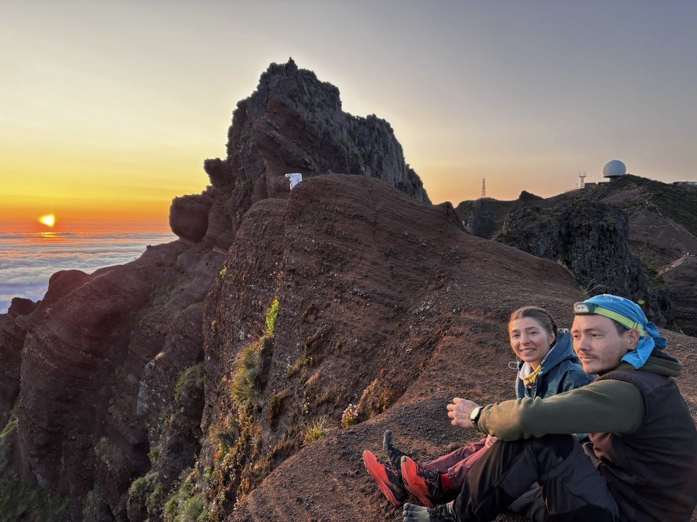
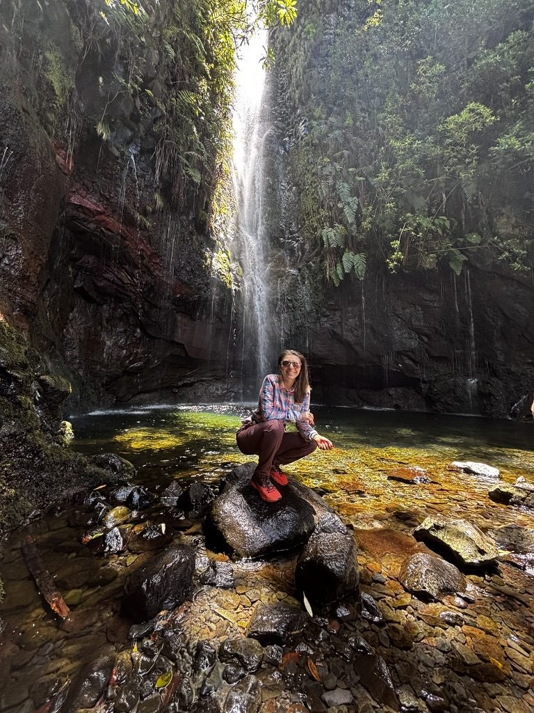
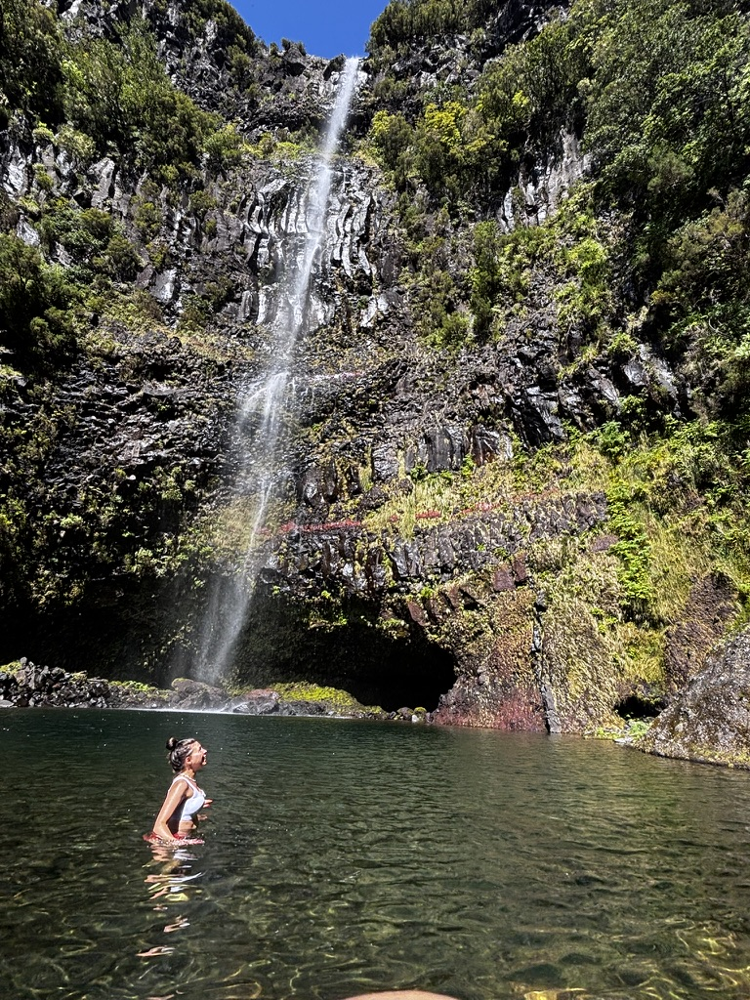
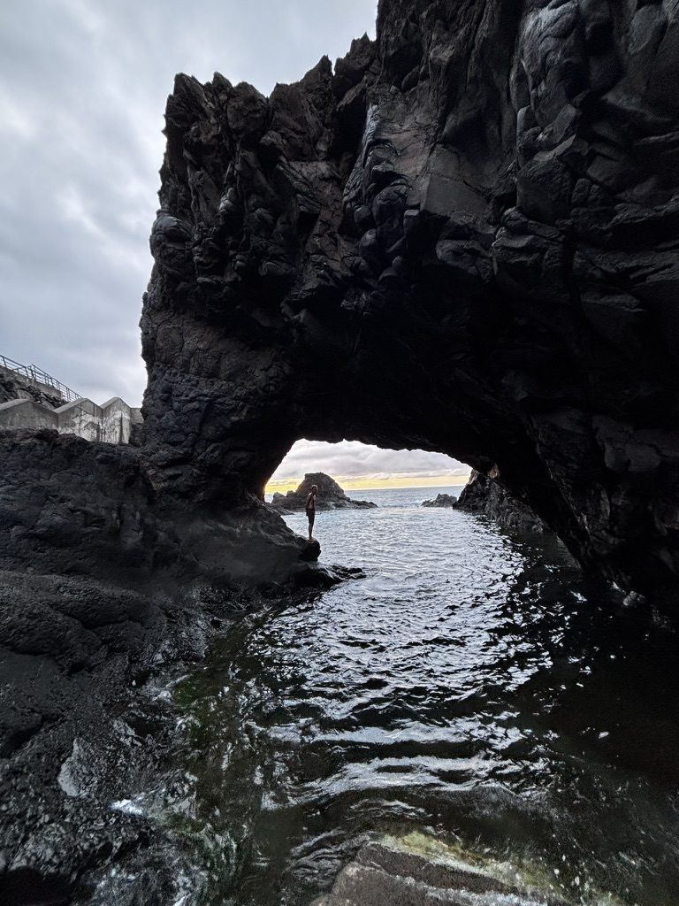
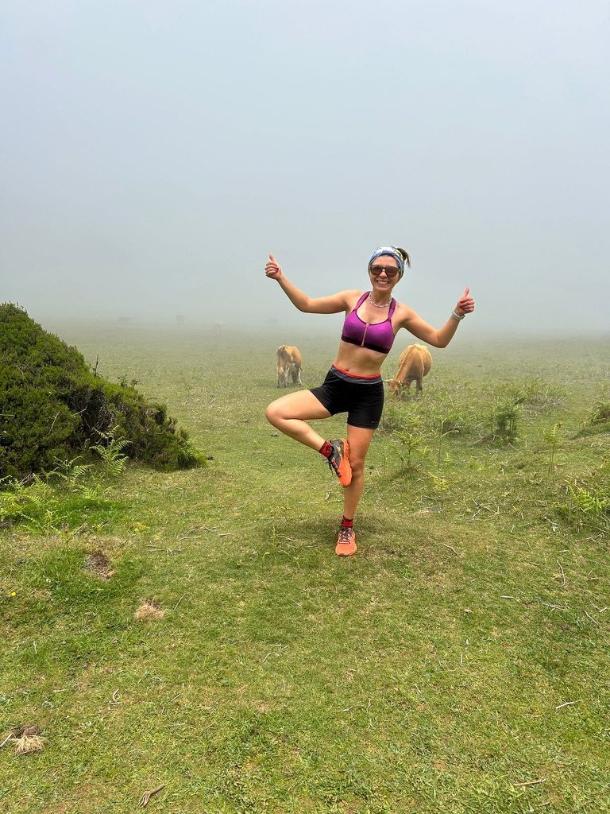
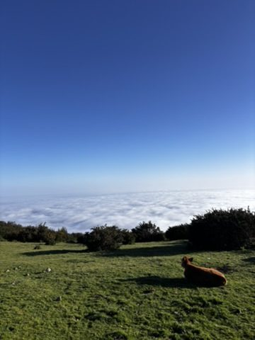
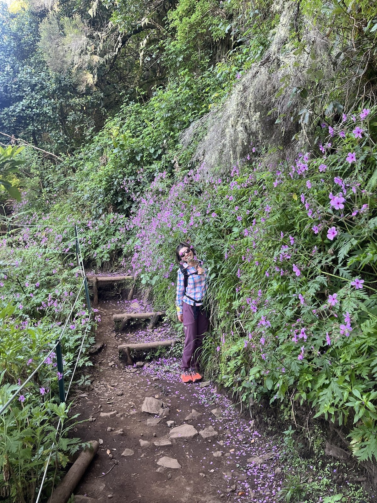

Madeira doesn't give you its hiking slowly. The island is small, the terrain is extreme, and the trails start from sea level and go to nearly 1,900 metres in a horizontal distance that should not logically allow that much elevation. Everything is steep. Everything has a view. The question is not whether a hike in Madeira will be good — it is which kind of overwhelming you prefer.
I went in two months — March, when the rains kept most trails closed, and June, when everything opened and I spent three weeks catching up. What follows are the hikes that stayed with me.
Pico Arieiro — the one you start before dawn

The steps up to Pico Arieiro. The clouds are below you. The light is arriving.
Pico Arieiro is 1,818 metres — the third highest peak in Madeira, reachable by road to 1,600m, and then by a trail that takes you above the cloud layer that sits permanently over the island. On a clear morning above the clouds, with the sunrise lighting the rock orange and the white sea stretching to every horizon, it is one of the most extraordinary places I have stood.
You drive up in the dark. You start the trail in the cold. You arrive at the top as the light begins, which is the correct sequence. The cobbled steps in the photo are the last section before the summit ridge — steep, exposed, with the drop falling away on both sides. Worthwhile in direct proportion to the effort.

Summit, same hike, different light. The Ukrainian ultra runner who was already there when I arrived.
The person I hiked this with was an endurance runner from Ukraine I'd met at the cowork in Funchal. He had been to the summit four times already and still treated each one as new. We sat up there for longer than planned, talking about running and life and how strange it is to find yourself in Madeira in June with a stranger who feels immediately familiar.
25 Fontes — the waterfall at the end of the levada

25 Fontes. The waterfall you reach after an hour and a half on the levada.
The levadas are irrigation channels — stone-lined waterways that carry water from the wet north of the island to the drier south. Madeira has 2,500 kilometres of them, and the maintenance paths alongside them form the main hiking network. Walking a levada means walking level — the channel follows the contours of the mountain perfectly — while the valley drops away below and the cliffs rise above. It's a very specific kind of hiking: horizontal, meditative, continuous.
The Levada das 25 Fontes ends at a waterfall with a pool, hidden in a canyon of green rock. "25 Fontes" means 25 springs — the water comes from multiple sources and arrives here together. The photo doesn't fully capture how loud it is, or how cold the air is in the canyon, or how the light comes through the vegetation in a way that makes everything look slightly unreal.
The waterfall you swim to

There was a pool. I got in. This is the face of someone who did not regret it.
On one of the June hikes, the trail passed a waterfall with a deep enough pool to swim in. I wasn't dressed for swimming. I got in anyway. The water was cold in a way that clears every thought immediately — the body takes over completely and the mind goes quiet for a few seconds.
I've written before about getting in behind the waterfall in the Azores. There's a version of this that happens repeatedly in places where water moves — you approach something you weren't expecting, someone says "do you want to get in," and the honest answer is always yes.
The volcanic rock arch by the sea

The arch. The ocean on the other side.
This is not a hiking trail destination. It's a coastal walk — the kind of thing you find in Madeira by walking along the lava shoreline and discovering that the sea has been cutting shapes into the rock for millennia. Standing inside a volcanic arch with the ocean on three sides and the last light of the day coming through is not a planned experience. It's the kind of thing the island offers when you're paying attention.
Running in the fog with cows

Not all who wander are lost. Some are doing yoga in a cow field in the fog.

Above the cloud layer. The dog had the right idea.
The high plateaux of Madeira — above 1,200 metres — are covered in grassland grazed by cattle. In the mornings, before the cloud burns off, you run through fog so thick you can't see more than twenty metres ahead, with the sound of cowbells somewhere in the grey and the smell of wet grass and the world entirely hidden.
Then you reach the edge of the plateau and the cloud is below you. The whole island is under white, and you are standing above it in sunshine, and the dog next to you has clearly found the correct position and doesn't intend to move.
This is Madeira. Not the one in the photos people share. The real one.
The flowers on the steps

The purple flower sections. They appear suddenly and they stop you completely.
In June, sections of the levada trails are lined with purple flowers that come up to head height on either side. You walk through them feeling slightly overdressed for a hiking trail and not minding at all. The island does this — gives you something decorative at the exact moment you weren't expecting it.